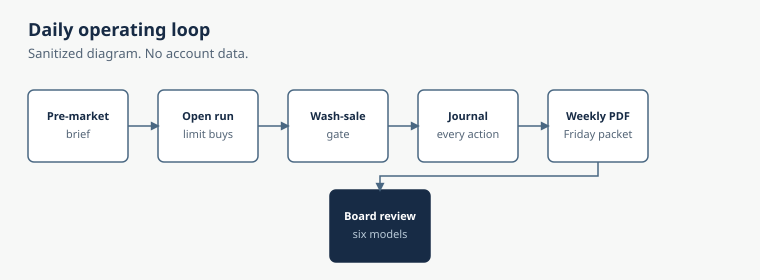

Why this exists
I wanted to know what it takes to let an AI agent act with real money and still trust the result. Paper trading does not answer that. So I funded a small Robinhood account on Sep 24, 2026, wrote the rules down, and built the controls around them.
This is my money only. It is not a fund that takes anyone else's money, and it is not investment advice. This is not a recommendation to buy or sell anything. AI-made trades can and do lose money.
How it is organized
- The fund manager is an AI agent. It researches and places trades inside the rulebook. It is the only part of the system that can trade.
- The board is six language models, each from a different lab, built to review the manager's reports and advise me. It has no brokerage access. Formal board runs are currently paused.
- The owner is me. I hold the only authority to change the rulebook or step in.
Timeline
Dates below are from the trading journal and the rulebook files. No dollar amounts.
| When | What happened |
|---|---|
| Sep 24, 2026 | Account funded. Performance base set. |
| Sep 25, 2026 | Inherited positions opened (not Reid's selections). |
| Sep 28, 2026 | Strategy direction approved (rulebook header). |
| Sep 29, 2026 | Rulebook v1.0 takes effect. Momentum rules. Live autonomous operation starts. |
| Oct 1, 2026 | Reid's first own fill under v1.0. |
| Oct 21, 2026 | v1 retired. Account all cash. |
| Oct 26, 2026 | v2.0 DRAFT never approved. v3.0 DRAFT parked ("trial no"). |
| Oct 27, 2026 | v4.0 DRAFT (value + sentiment). |
| Oct 28, 2026 | v4.1 FINAL DRAFT. A deposit recorded as a flow, not a return. Tyler approves live trading. |
| Oct 29, 2026 | Rulebook v4.2 Value + Sentiment live. |
| Since Oct 29 | No agent buys yet. No candidate has passed every gate. |
v1 was a momentum strategy. It appears here only as history. The rules in force now are value plus sentiment.
The daily loop (live)
On a trading day the live path is short. A stale wash-sale list blocks buys. Every agent buy is a limit order with a real broker stop. Every action is logged to the journal. An official close mark at 4:20 PM ET starts Nov 10, 2026.
- 7:00 AM pre-briefHoldings and gate check before the open
- Wash-sale gateA stale list blocks buys
- 9:31 AM ET open runLimit buys only, with a broker stop on every buy
- JournalEvery action logged
- 4:20 PM close markOfficial mark, starting Nov 10

Built, not running
These pieces are built and tested, but they are paused right now:
- All-day run schedule — the older multi-slot weekday schedule.
- Weekly shareholder email and PDF — the Friday packet generator.
- Board snapshot — the six-model advisory meeting.
- Watchdog — the missed-run monitor.
When a board meeting does run, a full meeting costs about $1 in model usage (logged meetings ran $0.47 to $1.65). The six seats are Anthropic, OpenAI, Qwen, Google, DeepSeek, and xAI. The board cannot trade.
What the tooling enforces
- Idempotent order handling. A retried order cannot be placed twice, and every order is read back from the broker.
- Stop-based position sizing. Size follows from where the stop is, with hard caps in code.
- Wash-sale gate. Stale or future-stamped lists block every buy.
- 56 money-critical checks on that trading code: 19 order-handling, 20 sizing, 8 exit-code, 9 wash-sale.
The public fund site
A separate static site at collins-capital.pages.dev rebuilds from the journal. The build fails if a page leaks an identifier, if a figure does not match its source file, or if the checkout is dirty. That site asks search engines not to index it. It has a suite of 280 automated tests.
What v1 taught
The only return I am publishing is the closed v1 record. Momentum rules were retired on Oct 21; the account was in cash after that through the Oct 23, 2026 close used for this table. The percent is for the whole account, including inherited positions. That result is why the rules changed, not a claim about what comes next. I am not publishing a return for v4.2.
| Closed v1 record, Sep 24 – Oct 23, 2026 close | Return |
|---|---|
| Collins Capital | −8.17% |
| SPY | −0.94% |
| QQQ | −4.95% |
| AIQ | −5.59% |
SPY −0.94% is the site's published source (official closes). The weekly email used −0.96% from the 4:00 PM trade price.
What running a real-money agent taught me
- A submitted order isn't proof; every order is read back from the broker before it counts.
- When broker state is unclear, the system goes into safe mode and takes no new exposure.
- An audit caught a rule that lived only in code and not in the written rulebook; the rulebook is now the source of truth.
- A deposit has to be booked as a cash flow, not a return. Otherwise the page would have shown a fake jump.
Status
v4.2 has been live since Oct 29, 2026. No agent buys yet, because no candidate has passed every gate. The live fund site shows the closed v1 record and does not show a later percent. This page does not either. An older bookmark for the trading-system page still works; it points here.